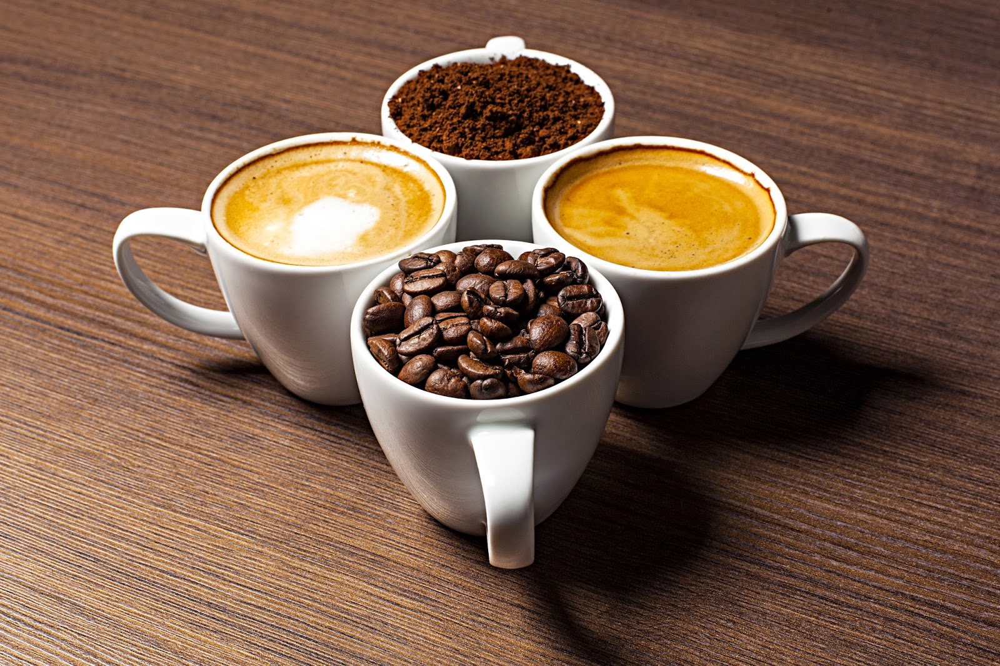
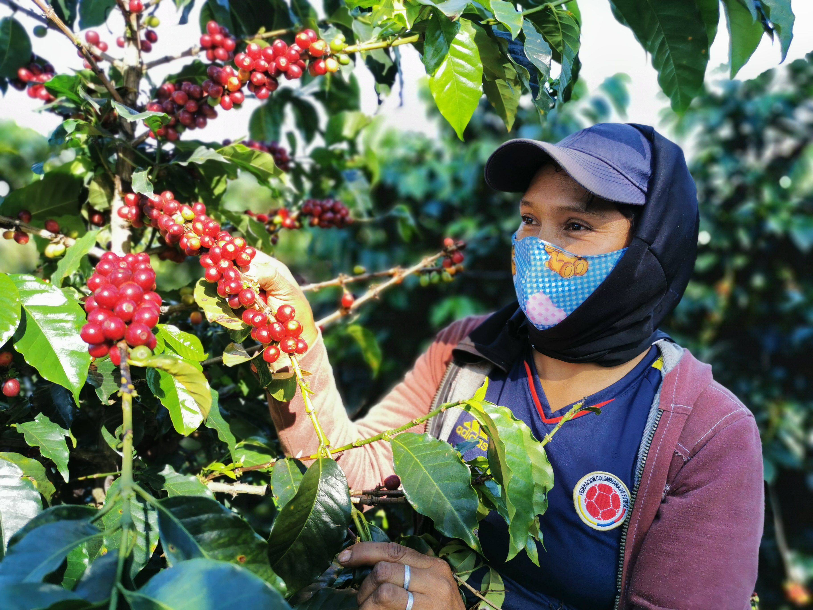
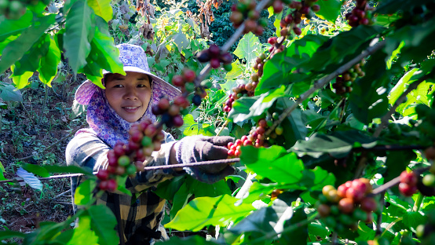
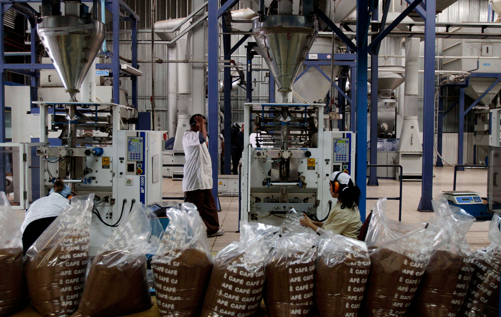
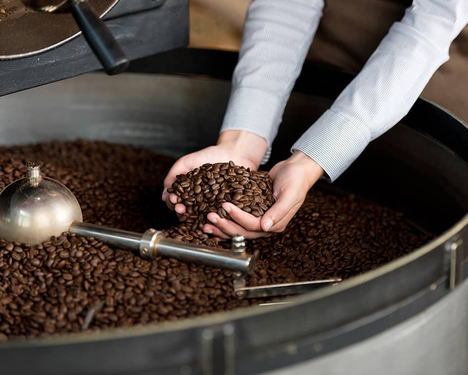

Sobre nosotros
UNA FAMILIA, UN GRUPO EMPRESARIAL
Contamos con una exquisita selección de granos provenientes principalmente del valle de La Convención, en la región sur del Cusco, y de la selva central del país, Satipo y Pangoa.
Asimismo desarrollamos una relación de cooperación técnica, a través de nuestra área de Asistencia Directa (A.D.), orientada a mantener el estado orgánico y sostenible de sus fincas, mejorar la calidad del café y el entorno de nuestros productores y sus familias.
En AICASA trabajamos para la mejora continua de nuestros procesos de selección y de servicio para cumplir con los estándares de calidad de los mercados más exigentes.
MISIÓN
Ofrecer cafés de alta calidad de diferentes zonas del Perú, cuidando nuestras relaciones con los caficultores además de poner en práctica una filosofía sostenible y respetuosa con el medio ambiente. Contamos con la capacidad de respuesta necesaria para cumplir con los requisitos más específicos de nuestros clientes alrededor del mundo.
VISIÓN
Ser la empresa promotora de la cultura del consumo del buen café peruano a través de nuestros productos y el capital humano que forma parte del grupo AICA.

CALIDAD Y COMPROMISO
Desde finales de los noventa AICASA ha participando activamente en programas para el desarrollo de la producción cafetalera. Nuestros esfuerzos, combinados con los de otros partidarios, han sido capaces de producir resultados en la reducción de la pobreza en las regiones productoras de café.
Con el fin de seguir contribuyendo al crecimiento socioeconómico del valle de La Convención desarrollamos un área llamada Asistencia Directa diseñada para trabajar mano a mano con los productores para desarrollar los mejores cafés de la región.
El área cuenta con diversos programas que permiten generar sinergia en los diferentes procesos de la cadena productiva del café.
Buscamos ser los aliados estratégicos que los caficultores necesitan, y encontrar soluciones y oportunidades que beneficien su calidad de vida y la de sus familias; bajo el criterio y/ o principios de las certificaciones de Orgánico y Rainforest Alliance.
Con este objetivo los técnicos del área desarrollan asesoramientos y capacitaciones con enfoque de responsabilidad social y bienestar laboral que tienen como propósito mejorar la calidad del café.
RESPONSABILIDAD SOCIAL
NUESTRO COMPROMISO
Nuestro antiguo Programa de Trato Directo se ha transformado en el área de Asistencia Directa. El principal objetivo es acercarnos realmente a los productores y cooperar en su desarrollo, en busca de los mejores cafés de la provincia de la Convención y, al mismo tiempo, encontrar soluciones y oportunidades en beneficio de su calidad de vida.
Los encargados del área realizan continuas visitas a los productores y sus cultivos para brindarles el asesoramiento técnico que necesitan y fortalecer sus capacidades, experiencia y voluntad de trabajo. En estas visitas a campo se verifica la implementación de las prácticas y normas que rigen las certificaciones internacionales que nos acreditan, buscando optimizar la calidad de los productos y mejorar la economía de los hogares de los productores.
AD – ÁREA DE ASISTENCIA DIRECTA
Nuestra área de Asistencia Directa (A.D) cuenta con diversos programas que permiten generar sinergia en los procesos de la cadena productiva del café. Nuestro objetivo principal es acercarnos realmente a los productores y encontrar soluciones y oportunidades que beneficien su calidad de vida y la de sus familias.
De esta manera, se viene desarrollando asesoramientos, talleres y capacitaciones concernientes a la responsabilidad social y bienestar laboral que tienen como propósito mejorar la calidad del café.
Lo que hacemos es estar verdaderamente comprometidos con los productores; para aconsejarlos, acompañarlos y guiarlos.
CALIDAD
INFRAESTRUCTURA
Contamos con dos centros de recolección y una planta de proceso. Nuestro primer centro de recolección se localiza en Quillabamba en Cusco y el segundo se ubica en la ciudad de Satipo en Junín.
La planta de proceso se ubica estratégicamente en la capital del país: Lima. Por su cercanía al puerto del Callao, nuestra logística de exportación se lleva a cabo con gran facilidad y rapidez.
SEGURIDAD ALIMENTARIA Y TRAZABILIDAD
En AICASA, manejamos un sistema de trazabilidad verticalmente integrado, desde el manejo en campo hasta la exportación, lo cual nos permite garantizar la seguridad y calidad de nuestros productos. Este sistema nos permite llevar un control adecuado sobre la procedencia de cada saco de café, su tratamiento agrícola, empaquetado y almacenamiento.
